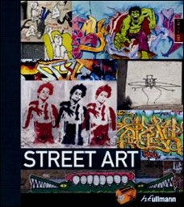

Art Pocket:Street Art
Design:Johannes Stahl
Measures:162mm×146mm
Binding:290pp., Hardback
color photographs,
Text in English
Date:Mar 2009
ISBN:978-3-8331-4944-3
Subject:Graffiti / Art
Publisher:h.f Ullmann
Description:
Street Art and graffiti are a tough nut to crack for art historians. Not attached to any specific era, Street Art is a phenomenon that takes place on the street, in full public view, far from all the galleries and on the margins of the law. This art is characterized by its unofficial character. It appears in all periods and in all places, from the images, names and messages of Pompeii to the elaborately sprayed and pasted walls and train carriages of our own time. Ubiquitous, honest, indestructible, anonymous and young иC this controversial art is produced by people who want to create non-academic images, to convey messages. Readers of this book learn about Street Art in its various dimensions and points of view, its history and its peculiarities, and gain a profound insight into the beauty and wit, the provocations and arguments of what is possible the most elementary of all forms of art.
Price: гд 100 RMB
(Only for Chinese market)
